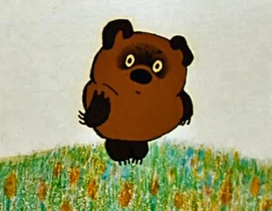

Шапка
Персонажи:
- Винни-Пух
- Ослик Иа
- Сова
- Кролик
Винни-Пух

Ви́нни-Пух (англ. Winnie-the-Pooh) — плюшевый мишка, персонаж двух повестей и двух сборников стихотворений английского писателя Алана Милна, впервые появившийся в печати в 1926 году.
Один из самых известных героев детской литературы XX века. В 1960—1970-е годы, благодаря пересказу Бориса Заходера, а затем фильмам студии «Союзмультфильм», где мишку озвучивал Евгений Леонов, Винни-Пух стал очень популярен и в СССР.
Низ